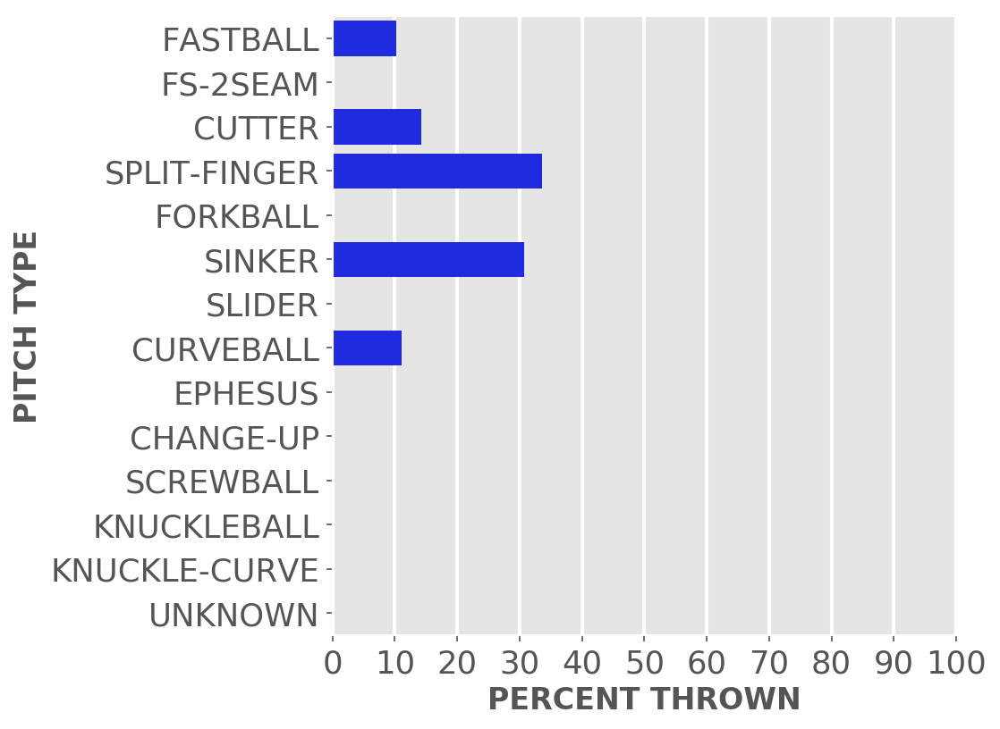
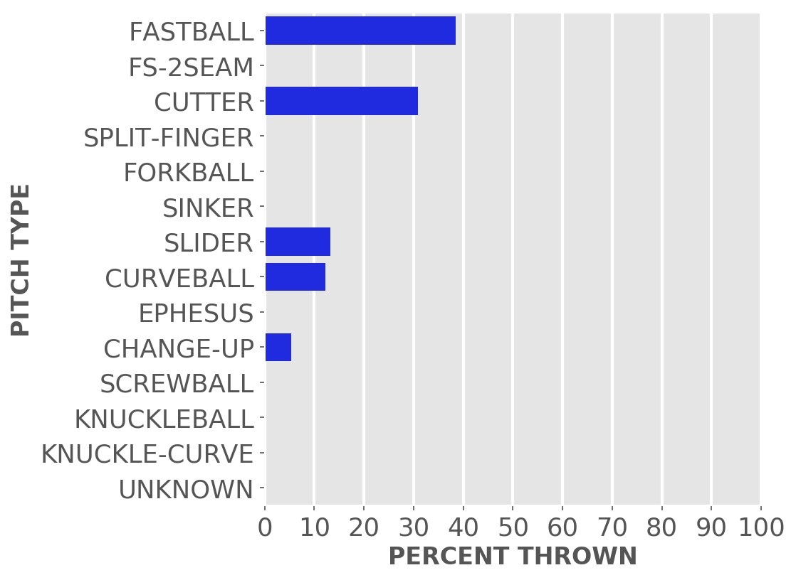
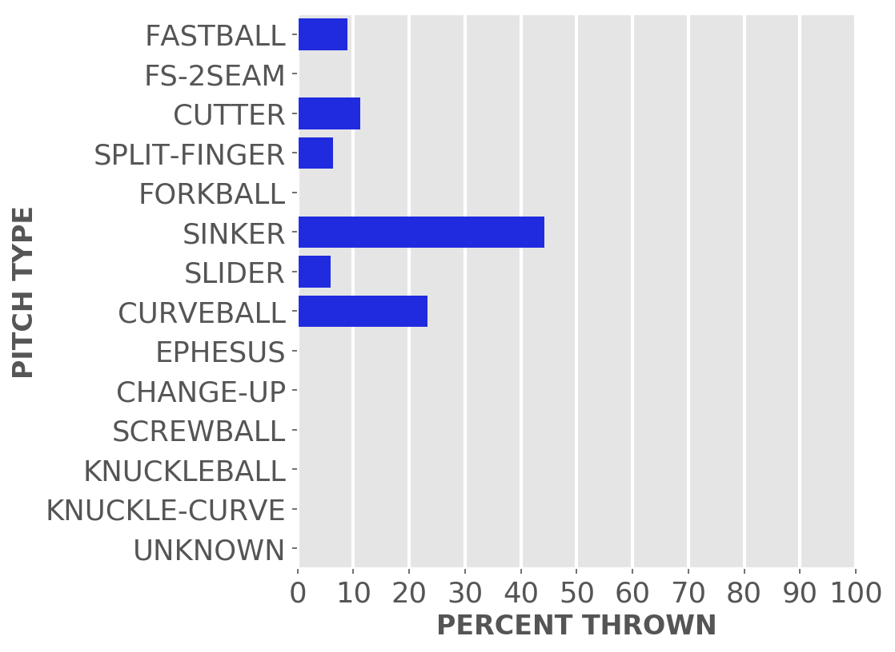
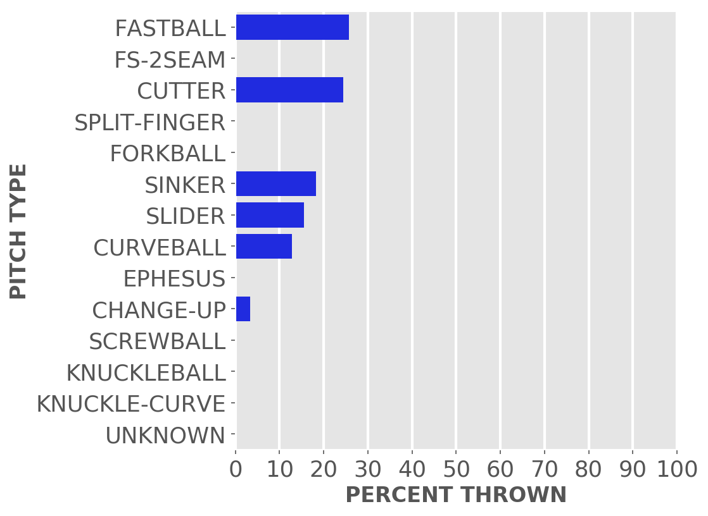
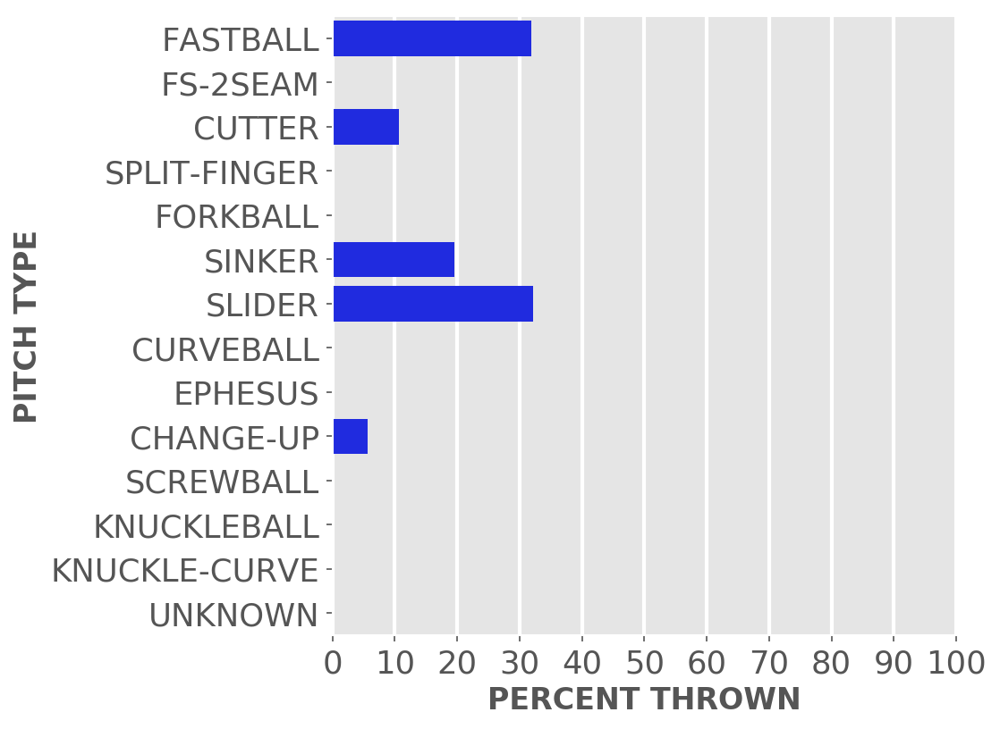

Chicago baseball
Cubs
A little-more-than-casual but not-very-wonky statistical look at the current season
Just enough stats to feed into the anxieties of your typical Cubby fan.
Updated Monday, April 17, at 3:02 p.m. Pybaseball gathers these from Baseball-reference.com.
Games
JUMP TO TOP | BATTERS | PITCHERS
On Sunday, Apr 16, the Cubs won a night game at the Dodgers, 3 to 2, in 9 innings. The winning pitcher was Smyly, losing pitcher was Urías. Save: Boxberger.
Next scheduled game: Monday, Apr 17, an away game at the Athletics.
Summary results by team
| Team | Wins | Loses | Avg. Cubs runs | Avg. runs against |
|---|---|---|---|---|
| Brewers | 1 | 2 | 3.33 | 4.0 |
| Dodgers | 2 | 1 | 4.0 | 2.0 |
| Mariners | 2 | 1 | 6.33 | 5.33 |
| Rangers | 2 | 1 | 4.67 | 3.67 |
| Reds | 1 | 1 | 9.0 | 6.0 |
Batters
JUMP TO TOP | GAMES | PITCHERS
Click the link under a player's name to get up-to-speed on a player at bat.
Tucker Barnhart #18, C
| Status (A = active) | A |
| Bats/Throws | L/R |
| Plate appearances | 17 |
| At bats | 16 |
| Hits | 5 |
| Home runs | 0 |
| Batting Avg. | 0.313 |

| Runs | 1 |
| RBI | 0 |
| On-base percent | 0.353 |
| Weighted OBP | 0.305 |
| Slugging % | 0.313 |
| Stolen bases | 0 |
| Caught stealing | 0 |
Other measures
| Weighted runs above avg. (wRAA) | -0.3 |
| Runs Above Replacement (RAR) | 1.0 |
| Fielding RAR | 0.7 |
| Wins above replacement (WAR) | 0.1 |
Cody Bellinger #24, CF
| Status (A = active) | A |
| Bats/Throws | L/L |
| Plate appearances | 60 |
| At bats | 53 |
| Hits | 13 |
| Home runs | 3 |
| Batting Avg. | 0.245 |

| Runs | 10 |
| RBI | 10 |
| On-base percent | 0.317 |
| Weighted OBP | 0.334 |
| Slugging % | 0.453 |
| Stolen bases | 3 |
| Caught stealing | 0 |
Other measures
| Weighted runs above avg. (wRAA) | 0.5 |
| Runs Above Replacement (RAR) | 3.5 |
| Fielding RAR | 0.0 |
| Wins above replacement (WAR) | 0.3 |
Yan Gomes #15, C
| Status (A = active) | A |
| Bats/Throws | R/R |
| Plate appearances | 35 |
| At bats | 34 |
| Hits | 8 |
| Home runs | 3 |
| Batting Avg. | 0.235 |
| Runs | 5 |
| RBI | 6 |
| On-base percent | 0.229 |
| Weighted OBP | 0.302 |
| Slugging % | 0.5 |
| Stolen bases | 1 |
| Caught stealing | 0 |
Other measures
| Weighted runs above avg. (wRAA) | -0.6 |
| Runs Above Replacement (RAR) | 1.4 |
| Fielding RAR | 0.7 |
| Wins above replacement (WAR) | 0.1 |
Ian Happ #8, LF
| Status (A = active) | A |
| Bats/Throws | S/R |
| Plate appearances | 63 |
| At bats | 52 |
| Hits | 16 |
| Home runs | 2 |
| Batting Avg. | 0.308 |

| Runs | 8 |
| RBI | 9 |
| On-base percent | 0.429 |
| Weighted OBP | 0.422 |
| Slugging % | 0.538 |
| Stolen bases | 2 |
| Caught stealing | 1 |
Other measures
| Weighted runs above avg. (wRAA) | 5.1 |
| Runs Above Replacement (RAR) | 4.8 |
| Fielding RAR | -2.0 |
| Wins above replacement (WAR) | 0.5 |
Nico Hoerner #2, 2B
| Status (A = active) | A |
| Bats/Throws | R/R |
| Plate appearances | 65 |
| At bats | 60 |
| Hits | 20 |
| Home runs | 0 |
| Batting Avg. | 0.333 |

| Runs | 13 |
| RBI | 3 |
| On-base percent | 0.385 |
| Weighted OBP | 0.347 |
| Slugging % | 0.383 |
| Stolen bases | 8 |
| Caught stealing | 1 |
Other measures
| Weighted runs above avg. (wRAA) | 1.3 |
| Runs Above Replacement (RAR) | 5.3 |
| Fielding RAR | 0.2 |
| Wins above replacement (WAR) | 0.5 |
Eric Hosmer #51, 1B
| Status (A = active) | A |
| Bats/Throws | L/L |
| Plate appearances | 44 |
| At bats | 40 |
| Hits | 10 |
| Home runs | 0 |
| Batting Avg. | 0.25 |
| Runs | 2 |
| RBI | 9 |
| On-base percent | 0.318 |
| Weighted OBP | 0.285 |
| Slugging % | 0.3 |
| Stolen bases | 0 |
| Caught stealing | 0 |
Other measures
| Weighted runs above avg. (wRAA) | -1.4 |
| Runs Above Replacement (RAR) | -0.8 |
| Fielding RAR | 1.0 |
| Wins above replacement (WAR) | -0.1 |
Nick Madrigal #1, 3B
| Status (A = active) | A |
| Bats/Throws | R/R |
| Plate appearances | 20 |
| At bats | 19 |
| Hits | 6 |
| Home runs | 0 |
| Batting Avg. | 0.316 |
| Runs | 3 |
| RBI | 1 |
| On-base percent | 0.35 |
| Weighted OBP | 0.322 |
| Slugging % | 0.368 |
| Stolen bases | 2 |
| Caught stealing | 1 |
Other measures
| Weighted runs above avg. (wRAA) | 0.0 |
| Runs Above Replacement (RAR) | -0.2 |
| Fielding RAR | -0.9 |
| Wins above replacement (WAR) | 0.0 |
Trey Mancini #36, 1B
| Status (A = active) | A |
| Bats/Throws | R/R |
| Plate appearances | 55 |
| At bats | 51 |
| Hits | 11 |
| Home runs | 1 |
| Batting Avg. | 0.216 |
| Runs | 4 |
| RBI | 9 |
| On-base percent | 0.241 |
| Weighted OBP | 0.23 |
| Slugging % | 0.275 |
| Stolen bases | 0 |
| Caught stealing | 0 |
Other measures
| Weighted runs above avg. (wRAA) | -4.2 |
| Runs Above Replacement (RAR) | -6.2 |
| Fielding RAR | -2.3 |
| Wins above replacement (WAR) | -0.6 |
Edwin Rios #30, 3B
| Status (A = active) | A |
| Bats/Throws | L/R |
| Plate appearances | 16 |
| At bats | 13 |
| Hits | 1 |
| Home runs | 1 |
| Batting Avg. | 0.077 |

| Runs | 1 |
| RBI | 2 |
| On-base percent | 0.25 |
| Weighted OBP | 0.259 |
| Slugging % | 0.308 |
| Stolen bases | 0 |
| Caught stealing | 0 |
Other measures
| Weighted runs above avg. (wRAA) | -0.8 |
| Runs Above Replacement (RAR) | -1.0 |
| Fielding RAR | |
| Wins above replacement (WAR) | -0.1 |
Seiya Suzuki #27, RF
| Status (A = active) | A |
| Bats/Throws | R/R |
| Plate appearances | 14 |
| At bats | 13 |
| Hits | 2 |
| Home runs | 1 |
| Batting Avg. | 0.154 |

| Runs | 1 |
| RBI | 1 |
| On-base percent | 0.214 |
| Weighted OBP | 0.259 |
| Slugging % | 0.385 |
| Stolen bases | 0 |
| Caught stealing | 1 |
Other measures
| Weighted runs above avg. (wRAA) | -0.7 |
| Runs Above Replacement (RAR) | -0.4 |
| Fielding RAR | 0.4 |
| Wins above replacement (WAR) | 0.0 |
Dansby Swanson #7, SS
| Status (A = active) | A |
| Bats/Throws | R/R |
| Plate appearances | 59 |
| At bats | 53 |
| Hits | 19 |
| Home runs | 0 |
| Batting Avg. | 0.358 |

| Runs | 10 |
| RBI | 5 |
| On-base percent | 0.424 |
| Weighted OBP | 0.379 |
| Slugging % | 0.415 |
| Stolen bases | 2 |
| Caught stealing | 1 |
Other measures
| Weighted runs above avg. (wRAA) | 2.7 |
| Runs Above Replacement (RAR) | 5.7 |
| Fielding RAR | 0.8 |
| Wins above replacement (WAR) | 0.6 |
Luis Torrens #22, C
| Status (A = active) | A |
| Bats/Throws | R/R |
| Plate appearances | 11 |
| At bats | 10 |
| Hits | 3 |
| Home runs | 0 |
| Batting Avg. | 0.3 |
| Runs | 0 |
| RBI | 1 |
| On-base percent | 0.364 |
| Weighted OBP | 0.309 |
| Slugging % | 0.3 |
| Stolen bases | 0 |
| Caught stealing | 0 |
Other measures
| Weighted runs above avg. (wRAA) | -0.1 |
| Runs Above Replacement (RAR) | -0.2 |
| Fielding RAR | 0.0 |
| Wins above replacement (WAR) | 0.0 |
Nelson Velazquez #4, CF
| Status (A = active) | A |
| Bats/Throws | R/R |
| Plate appearances | 5 |
| At bats | 4 |
| Hits | 3 |
| Home runs | 1 |
| Batting Avg. | 0.75 |

| Runs | 3 |
| RBI | 4 |
| On-base percent | 0.8 |
| Weighted OBP | 0.979 |
| Slugging % | 1.75 |
| Stolen bases | 0 |
| Caught stealing | 0 |
Other measures
| Weighted runs above avg. (wRAA) | 2.7 |
| Runs Above Replacement (RAR) | 2.7 |
| Fielding RAR | -0.3 |
| Wins above replacement (WAR) | 0.3 |
Patrick Wisdom #16, 3B
| Status (A = active) | A |
| Bats/Throws | R/R |
| Plate appearances | 52 |
| At bats | 47 |
| Hits | 12 |
| Home runs | 6 |
| Batting Avg. | 0.255 |

| Runs | 11 |
| RBI | 9 |
| On-base percent | 0.327 |
| Weighted OBP | 0.42 |
| Slugging % | 0.681 |
| Stolen bases | 0 |
| Caught stealing | 0 |
Other measures
| Weighted runs above avg. (wRAA) | 4.1 |
| Runs Above Replacement (RAR) | 6.6 |
| Fielding RAR | 0.1 |
| Wins above replacement (WAR) | 0.7 |
Pitchers
Click the link under a player's name to get acquainted with who's on the mound.Click here for a description of these stats and more.
Adbert Alzolay #73, P
| Status (A = active) | A |
| Bats/Throws | R/R |
| Wins | 1 |
| Losses | 0 |
| ERA | 3.12 |
| Caught stealing | 0 |
| Complete games | 0 |
| Shutouts | 0 |
| Saves | 0 |
| Blown saves | 0 |
Pitch types

Fastball = Four Seam and Unclassified Fastballs; FS-2seam = Two Seam Fastballs; Ephesuses are a really slow ball
| Average innings pitched | 1.6 |
| Strikeouts per 9 innings | 11.42 |
| Walks per 9 innings | 2.08 |
| Walks, hits per inning (WHIP) | 0.69 |
| Percent left on base | 65.2 |
| Percent first pitch strike | 69.7 |
Other measures
| Avg. run support | 16.0 |
| Opponents batting average | 0.129 |
| Batting avg. on balls in play | 0.158 |
| Fielding independent pitching | 2.98 |
| Win probability added (WPA) | 0.11 |
| Runs above replacement | 1.5 |
| WAR | 0.1 |
Brad Boxberger #25, P
| Status (A = active) | A |
| Bats/Throws | R/R |
| Wins | 0 |
| Losses | 0 |
| ERA | 1.42 |
| Caught stealing | 0 |
| Complete games | 0 |
| Shutouts | 0 |
| Saves | 1 |
| Blown saves | 0 |
Pitch types
Fastball = Four Seam and Unclassified Fastballs; FS-2seam = Two Seam Fastballs; Ephesuses are a really slow ball
| Average innings pitched | 0.9 |
| Strikeouts per 9 innings | 9.95 |
| Walks per 9 innings | 2.84 |
| Walks, hits per inning (WHIP) | 0.95 |
| Percent left on base | 85.7 |
| Percent first pitch strike | 52.0 |
Other measures
| Avg. run support | 7.0 |
| Opponents batting average | 0.182 |
| Batting avg. on balls in play | 0.267 |
| Fielding independent pitching | 2.53 |
| Win probability added (WPA) | 0.29 |
| Runs above replacement | 1.4 |
| WAR | 0.1 |
Michael Fulmer #32, P
| Status (A = active) | A |
| Bats/Throws | R/R |
| Wins | 0 |
| Losses | 1 |
| ERA | 3.86 |
| Caught stealing | 0 |
| Complete games | 0 |
| Shutouts | 0 |
| Saves | 1 |
| Blown saves | 2 |
Pitch types

Fastball = Four Seam and Unclassified Fastballs; FS-2seam = Two Seam Fastballs; Ephesuses are a really slow ball
| Average innings pitched | 1.0 |
| Strikeouts per 9 innings | 14.14 |
| Walks per 9 innings | 1.29 |
| Walks, hits per inning (WHIP) | 1.43 |
| Percent left on base | 81.4 |
| Percent first pitch strike | 65.5 |
Other measures
| Avg. run support | 1.0 |
| Opponents batting average | 0.321 |
| Batting avg. on balls in play | 0.5 |
| Fielding independent pitching | 2.47 |
| Win probability added (WPA) | -0.91 |
| Runs above replacement | 2.5 |
| WAR | 0.2 |
Mark Leiter Jr. #38, P
| Status (A = active) | A |
| Bats/Throws | R/R |
| Wins | 0 |
| Losses | 0 |
| ERA | 0.0 |
| Caught stealing | 0 |
| Complete games | 0 |
| Shutouts | 0 |
| Saves | 0 |
| Blown saves | 0 |
Pitch types
Fastball = Four Seam and Unclassified Fastballs; FS-2seam = Two Seam Fastballs; Ephesuses are a really slow ball
| Average innings pitched | 0.9 |
| Strikeouts per 9 innings | 17.05 |
| Walks per 9 innings | 4.26 |
| Walks, hits per inning (WHIP) | 0.95 |
| Percent left on base | 100.0 |
| Percent first pitch strike | 50.0 |
Other measures
| Avg. run support | 0.0 |
| Opponents batting average | 0.136 |
| Batting avg. on balls in play | 0.3 |
| Fielding independent pitching | 1.43 |
| Win probability added (WPA) | 0.47 |
| Runs above replacement | 2.5 |
| WAR | 0.3 |
Julian Merryweather #66, P
| Status (A = active) | A |
| Bats/Throws | R/R |
| Wins | 0 |
| Losses | 0 |
| ERA | 12.71 |
| Caught stealing | 0 |
| Complete games | 0 |
| Shutouts | 0 |
| Saves | 0 |
| Blown saves | 0 |
Pitch types

Fastball = Four Seam and Unclassified Fastballs; FS-2seam = Two Seam Fastballs; Ephesuses are a really slow ball
| Average innings pitched | 1.0 |
| Strikeouts per 9 innings | 7.94 |
| Walks per 9 innings | 3.18 |
| Walks, hits per inning (WHIP) | 2.12 |
| Percent left on base | 43.5 |
| Percent first pitch strike | 75.9 |
Other measures
| Avg. run support | 0.0 |
| Opponents batting average | 0.37 |
| Batting avg. on balls in play | 0.4 |
| Fielding independent pitching | 7.21 |
| Win probability added (WPA) | -0.39 |
| Runs above replacement | -1.2 |
| WAR | -0.1 |
Michael Rucker #59, P
| Status (A = active) | A |
| Bats/Throws | R/R |
| Wins | 1 |
| Losses | 0 |
| ERA | 4.05 |
| Caught stealing | 0 |
| Complete games | 0 |
| Shutouts | 0 |
| Saves | 0 |
| Blown saves | 0 |
Pitch types
Fastball = Four Seam and Unclassified Fastballs; FS-2seam = Two Seam Fastballs; Ephesuses are a really slow ball
| Average innings pitched | 1.0 |
| Strikeouts per 9 innings | 12.15 |
| Walks per 9 innings | 1.35 |
| Walks, hits per inning (WHIP) | 0.9 |
| Percent left on base | 65.2 |
| Percent first pitch strike | 42.3 |
Other measures
| Avg. run support | 11.0 |
| Opponents batting average | 0.2 |
| Batting avg. on balls in play | 0.267 |
| Fielding independent pitching | 3.02 |
| Win probability added (WPA) | 0.01 |
| Runs above replacement | 0.7 |
| WAR | 0.1 |
Drew Smyly #11, P
| Status (A = active) | A |
| Bats/Throws | L/L |
| Wins | 1 |
| Losses | 1 |
| ERA | 4.7 |
| Caught stealing | 3 |
| Complete games | 0 |
| Shutouts | 0 |
| Saves | 0 |
| Blown saves | 0 |
Pitch types

Fastball = Four Seam and Unclassified Fastballs; FS-2seam = Two Seam Fastballs; Ephesuses are a really slow ball
| Average innings pitched | 5.0 |
| Strikeouts per 9 innings | 7.63 |
| Walks per 9 innings | 2.93 |
| Walks, hits per inning (WHIP) | 1.3 |
| Percent left on base | 67.7 |
| Percent first pitch strike | 63.6 |
Other measures
| Avg. run support | 11.0 |
| Opponents batting average | 0.254 |
| Batting avg. on balls in play | 0.295 |
| Fielding independent pitching | 4.69 |
| Win probability added (WPA) | -0.21 |
| Runs above replacement | 1.4 |
| WAR | 0.1 |
Justin Steele #35, P
| Status (A = active) | A |
| Bats/Throws | L/L |
| Wins | 2 |
| Losses | 0 |
| ERA | 1.42 |
| Caught stealing | 3 |
| Complete games | 0 |
| Shutouts | 0 |
| Saves | 0 |
| Blown saves | 0 |
Pitch types

Fastball = Four Seam and Unclassified Fastballs; FS-2seam = Two Seam Fastballs; Ephesuses are a really slow ball
| Average innings pitched | 6.3 |
| Strikeouts per 9 innings | 9.0 |
| Walks per 9 innings | 2.84 |
| Walks, hits per inning (WHIP) | 0.84 |
| Percent left on base | 98.5 |
| Percent first pitch strike | 58.3 |
Other measures
| Avg. run support | 12.0 |
| Opponents batting average | 0.152 |
| Batting avg. on balls in play | 0.178 |
| Fielding independent pitching | 3.64 |
| Win probability added (WPA) | 0.76 |
| Runs above replacement | 3.5 |
| WAR | 0.4 |
Marcus Stroman #0, P
| Status (A = active) | A |
| Bats/Throws | R/R |
| Wins | 2 |
| Losses | 1 |
| ERA | 1.0 |
| Caught stealing | 3 |
| Complete games | 0 |
| Shutouts | 0 |
| Saves | 0 |
| Blown saves | 0 |
Pitch types
Fastball = Four Seam and Unclassified Fastballs; FS-2seam = Two Seam Fastballs; Ephesuses are a really slow ball
| Average innings pitched | 6.0 |
| Strikeouts per 9 innings | 10.0 |
| Walks per 9 innings | 4.0 |
| Walks, hits per inning (WHIP) | 1.0 |
| Percent left on base | 89.5 |
| Percent first pitch strike | 56.3 |
Other measures
| Avg. run support | 7.0 |
| Opponents batting average | 0.161 |
| Batting avg. on balls in play | 0.238 |
| Fielding independent pitching | 2.6 |
| Win probability added (WPA) | 0.67 |
| Runs above replacement | 5.5 |
| WAR | 0.6 |
Jameson Taillon #50, P
| Status (A = active) | A |
| Bats/Throws | R/R |
| Wins | 0 |
| Losses | 2 |
| ERA | 4.5 |
| Caught stealing | 3 |
| Complete games | 0 |
| Shutouts | 0 |
| Saves | 0 |
| Blown saves | 0 |
Pitch types
Fastball = Four Seam and Unclassified Fastballs; FS-2seam = Two Seam Fastballs; Ephesuses are a really slow ball
| Average innings pitched | 4.7 |
| Strikeouts per 9 innings | 10.29 |
| Walks per 9 innings | 2.57 |
| Walks, hits per inning (WHIP) | 1.36 |
| Percent left on base | 57.9 |
| Percent first pitch strike | 69.4 |
Other measures
| Avg. run support | 5.0 |
| Opponents batting average | 0.259 |
| Batting avg. on balls in play | 0.357 |
| Fielding independent pitching | 1.9 |
| Win probability added (WPA) | -0.15 |
| Runs above replacement | 5.0 |
| WAR | 0.5 |
Keegan Thompson #71, P
| Status (A = active) | A |
| Bats/Throws | R/R |
| Wins | 1 |
| Losses | 0 |
| ERA | 1.08 |
| Caught stealing | 0 |
| Complete games | 0 |
| Shutouts | 0 |
| Saves | 0 |
| Blown saves | 0 |
Pitch types

Fastball = Four Seam and Unclassified Fastballs; FS-2seam = Two Seam Fastballs; Ephesuses are a really slow ball
| Average innings pitched | 1.6 |
| Strikeouts per 9 innings | 8.64 |
| Walks per 9 innings | 6.48 |
| Walks, hits per inning (WHIP) | 0.96 |
| Percent left on base | 87.5 |
| Percent first pitch strike | 75.8 |
Other measures
| Avg. run support | 2.0 |
| Opponents batting average | 0.074 |
| Batting avg. on balls in play | 0.105 |
| Fielding independent pitching | 3.56 |
| Win probability added (WPA) | 0.72 |
| Runs above replacement | 0.8 |
| WAR | 0.1 |
Hayden Wesneski #19, P
| Status (A = active) | A |
| Bats/Throws | R/R |
| Wins | 0 |
| Losses | 0 |
| ERA | 7.5 |
| Caught stealing | 2 |
| Complete games | 0 |
| Shutouts | 0 |
| Saves | 0 |
| Blown saves | 0 |
Pitch types
Fastball = Four Seam and Unclassified Fastballs; FS-2seam = Two Seam Fastballs; Ephesuses are a really slow ball
| Average innings pitched | 3.0 |
| Strikeouts per 9 innings | 6.0 |
| Walks per 9 innings | 9.0 |
| Walks, hits per inning (WHIP) | 2.83 |
| Percent left on base | 54.7 |
| Percent first pitch strike | 45.7 |
Other measures
| Avg. run support | 1.0 |
| Opponents batting average | 0.379 |
| Batting avg. on balls in play | 0.364 |
| Fielding independent pitching | 11.49 |
| Win probability added (WPA) | -0.49 |
| Runs above replacement | -3.8 |
| WAR | -0.3 |
JUMP TO TOP